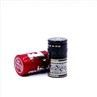
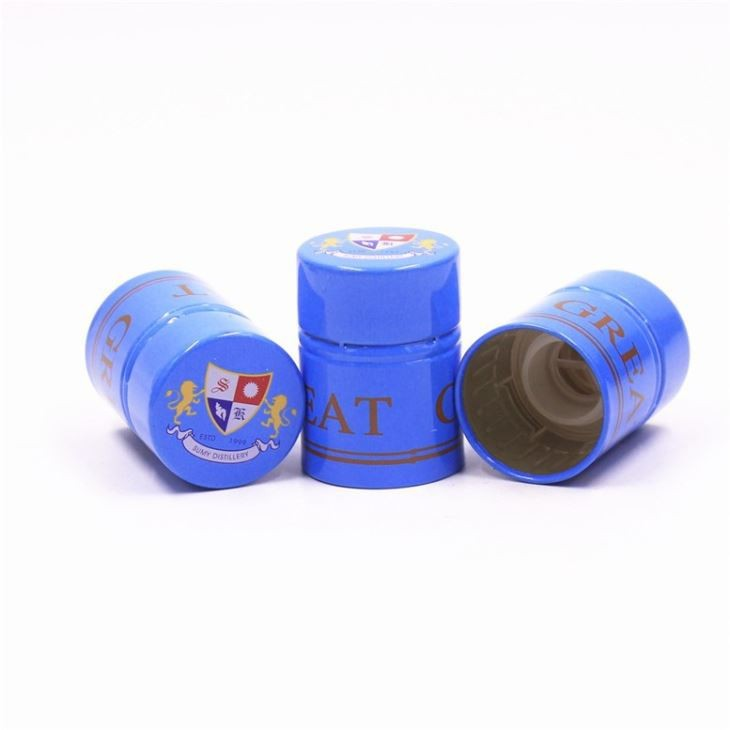

Can wine screw caps be customized? This is a question that many winemakers and wine enthusiasts often ask. As a professional wine screw cap supplier, I'm here to delve into this topic and share some insights.
The Basics of Wine Screw Caps
Wine screw caps have become increasingly popular in recent years. They offer several advantages over traditional cork closures. Firstly, they provide a more consistent seal, which helps to prevent oxidation and spoilage. This means that the wine inside the bottle can maintain its flavor and aroma for a longer period. Secondly, screw caps are more convenient for consumers. There's no need for a corkscrew, and they can be easily opened and re - closed.
Customization Possibilities
The answer to the question "Can wine screw caps be customized?" is a resounding yes. There are multiple aspects of wine screw caps that can be tailored to meet specific needs.
Design Customization
One of the most significant areas of customization is the design. Winemakers can choose from a wide range of colors, finishes, and printing options. For example, a winery with a specific brand color can have the screw caps produced in that exact shade. This helps to reinforce brand identity and make the wine stand out on the shelves.
In terms of finishes, there are options like matte, gloss, or textured finishes. A matte finish can give a more sophisticated and understated look, while a gloss finish can make the cap more eye - catching. Textured finishes can add a tactile element, enhancing the overall sensory experience of handling the bottle.
Printing on the screw caps is also a powerful customization tool. Winemakers can print their logo, brand name, vintage, or other relevant information directly on the cap. This not only provides important details to the consumers but also serves as a form of marketing. The printing can be done using high - quality techniques to ensure sharp and long - lasting results.
Size and Shape Customization
Wine screw caps can also be customized in terms of size and shape. Different wine bottles may require different cap sizes, and as a supplier, we can produce caps to fit various bottle neck dimensions. Whether it's a standard - sized wine bottle or a unique, custom - shaped one, we can manufacture the appropriate screw caps.
For example, our 33x47mm Aluminum Plastic Bottle Cap is a popular option for many wineries. It offers a perfect fit for a specific range of bottle sizes and is made from high - quality aluminum and plastic materials, ensuring durability and a tight seal.
Material Customization
The choice of material for wine screw caps can also be customized. While aluminum is a commonly used material due to its lightweight, corrosion - resistant, and recyclable properties, there are other options available as well. Some winemakers may prefer plastic screw caps for their cost - effectiveness or specific aesthetic qualities.
We also offer Wine Foil Caps, which combine the elegance of foil with the functionality of a screw cap. These caps are often used for premium wines, as they add a touch of luxury to the packaging.
The Process of Customizing Wine Screw Caps
The process of customizing wine screw caps typically starts with a consultation. We work closely with the winemaker to understand their specific requirements, including design concepts, size specifications, and material preferences.
Once the requirements are clear, our design team creates mock - ups and samples. These samples allow the winemaker to visualize the final product and make any necessary adjustments. After the design is approved, we move on to the production phase.
Our manufacturing facilities are equipped with state - of - the - art machinery and technology, which ensures high - quality production. We adhere to strict quality control measures at every stage of the manufacturing process to guarantee that the final products meet the highest standards.
Case Studies
Let's take a look at some real - world examples of how wine screw cap customization has benefited wineries.
A small, family - owned winery wanted to differentiate its wines in the market. They decided to customize their screw caps with a unique, hand - drawn logo and a textured finish. The result was a significant increase in brand recognition. Consumers were drawn to the distinctive look of the bottles, and the winery saw a boost in sales.
Another winery was launching a new line of premium wines. They opted for our 30x47 Whiskey Aluminum Bottle Cap with a gold - plated finish and embossed logo. The caps added a touch of luxury to the bottles, positioning the wines as high - end products. This strategy helped the winery target a more affluent customer segment and achieve higher profit margins.
Quality Assurance
As a supplier, we understand the importance of quality when it comes to wine screw caps. We source our materials from trusted suppliers and conduct rigorous quality checks at every step of the production process. Our caps are designed to provide a reliable seal, protecting the wine from oxidation and contamination.
We also comply with all relevant industry standards and regulations. This ensures that our products are safe for use and meet the expectations of both winemakers and consumers.
The Future of Customized Wine Screw Caps
The trend of customized wine screw caps is only going to grow in the future. As the wine industry becomes more competitive, winemakers are constantly looking for ways to differentiate their products. Customized screw caps offer a cost - effective and impactful solution.


Advancements in technology will also open up new possibilities for customization. For example, we may see the development of more sustainable materials for screw caps, as environmental concerns become more prominent. There could also be innovations in printing techniques, allowing for even more detailed and complex designs.
Contact for Procurement
If you're a winemaker or involved in the wine industry and are interested in customizing wine screw caps for your products, we'd love to hear from you. We have the expertise and resources to bring your customization ideas to life. Whether you have a specific design in mind or need guidance on the best customization options for your brand, our team is ready to assist you.
Reach out to us to start the conversation about your wine screw cap customization needs. We're committed to providing you with high - quality, customized products that will enhance the appeal of your wines.
References
- "The Wine Closure Handbook" - A comprehensive guide on different types of wine closures and their properties.
- Industry reports on wine packaging trends, which highlight the growing demand for customized wine screw caps.